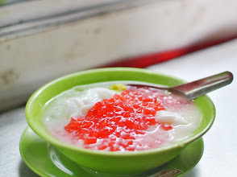

🧋 Minuman Khas Bogor

Es Pala Bogor
Es Pala Bogor adalah minuman tradisional khas Kota Bogor yang telah dikenal sejak tahun 1950-an. Minuman ini terkenal karena rasanya yang segar serta bahan bakunya yang berasal dari buah pala, salah satu komoditas yang tumbuh subur di wilayah Bogor.
💸 Harga: Rp10.000 – Rp25.000
⭐ Rating: 4.6/5
📍 Lokasi: Jl. Suryakencana Gg. Aut, RT.01/RW.05, Gudang, Kecamatan Bogor Tengah, Kota Bogor, Jawa Barat 16123
🕒 Jam Operasional: 07.00 - 19.00

Bir Kotjok
Minuman tradisional bebas alkohol yang terbuat dari campuran jahe, kayu manis, cengkeh, dan gula aren.
💸 Harga: Rp10.000 – Rp25.000
⭐ Rating: 4.6/5
📍 Lokasi: Jl. Suryakencana No.259, RT.03/RW.02, Gudang, Kecamatan Bogor Tengah, Kota Bogor, Jawa Barat 16123
🕒 Jam Operasional: 09.00 - 15.00

Es Loder
Minuman langka yang mirip es campur dengan isian bubur sumsum, cendol, dan potongan cincau.
💸 Harga: Rp15.000 – Rp25.000
⭐ Rating: 4.7/5
📍 Lokasi: Cilendek Tim., Kec. Bogor Bar., Kota Bogor, Jawa Barat 16112
🕒 Jam Operasional: 09.00 - 16.15